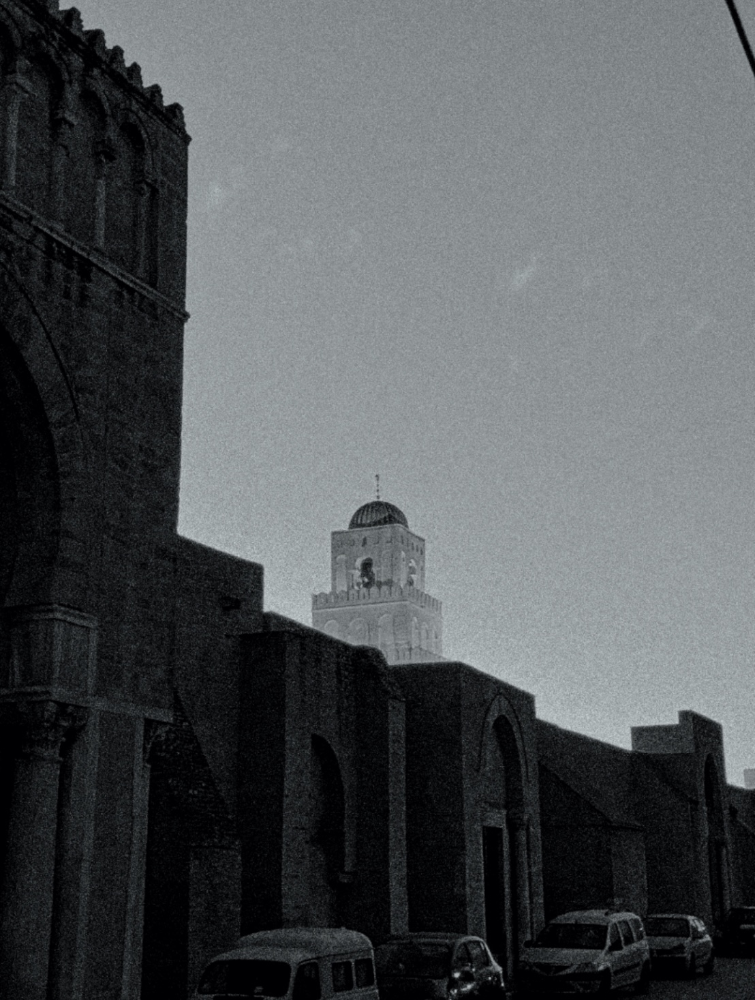

Mosquée Okba Ibn Nafaa _
La Grande Mosquée de Kairouan (arabe : الجامع الكبير بالقيروان), également appelée mosquée Oqba Ibn Nafi (جامع عقبة بن نافع) en souvenir de son fondateur Oqba Ibn Nafi, est l'une des principales mosquées de Tunisie, située à Kairouan. Historiquement première métropole musulmane du Maghreb, Kairouan, dont l'apogée sur les plans politique et intellectuel se situe au ixe siècle2, est réputée comme étant le centre spirituel et religieux de la Tunisie3,4 ; elle est aussi parfois considérée comme la quatrième ville sainte de l'islam sunnite
